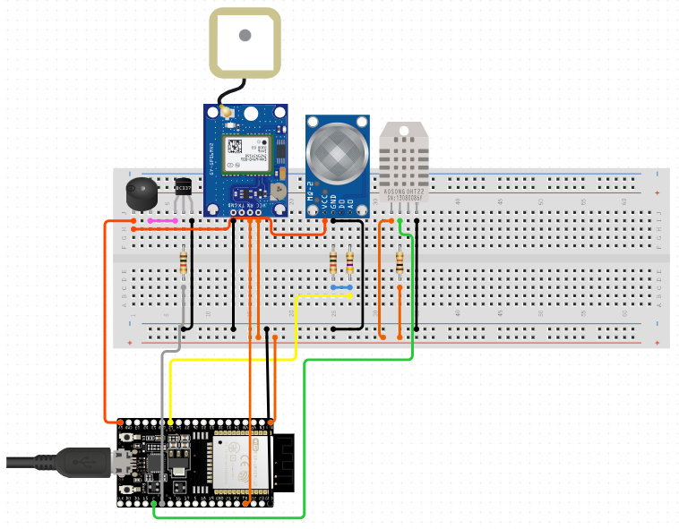

To create a fire detecting and locating IoT device that will help Nasugbu Fire Station respond and pinpoint the exact location of the fire incident. This project will improve efficiency of the fire responders by knowing the exact location of the fire incident. This will also eliminate the delay caused by manual calling.
Wemos D1 R2 GY-NEO6MV2 NEO-6M Ublox Flight Controller GPS Module Breadboard Piezo Buzzer DHT11 Temperature sensor Jumpwire MQ2 Gas Sensor Transistor
Shin Monton
Emmanuel Laparan
Maria Roica Ellao